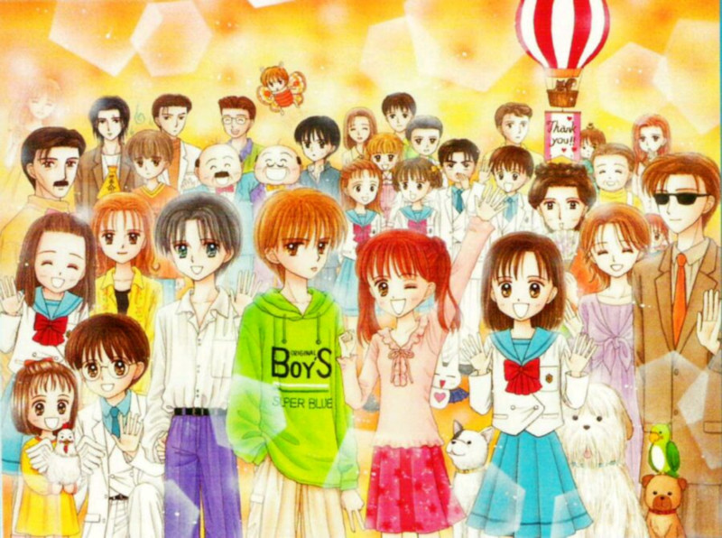

玩偶游戏

交配类型：BG
《玩偶游戏》（日语：こどものおもちゃ）是小花美穗创作的少女漫画。另外也有同名的电视动画。最初在漫画杂志Ribon上连载，后来发行了10期的单行本。在作品内出现的电影〈水之馆〉也以番外篇的型式发行单行本。除了在日本以外，作品也有在台湾、美国、香港等地发行。
故事是以有名的少女童星仓田纱南及她其中一名同学羽山秋人为中心的校园爱情故事。
此作品曾得到1998年的第22回讲谈社漫画赏少女部门奖。
《玩偶游戏》以及池野恋的《心跳今夜》，2部经典少女漫画，宣布将于8月3日在日本发售的集英社少女漫画杂志“Ribon”9月号上，作为Ribon创刊60周年企画一环推出短篇漫画的消息。由于Ribon杂志适逢推出60周年，因此做为纪念企划的一环，官方将过去两部于杂志上连载的人气作品《玩偶游戏》以及《心跳在今夜》以短篇的方式重新在杂志中登场。
剧情简介
以“小孩子”的角度去探讨学级崩坏[2]、校园暴力、青少年犯罪、家庭关系破裂、父母离异等现代的社会问题。作品超越了一般的少女漫画，得到社会各年代的支持。主角是一名童星，在作品发表时童星是非常备受注目的。在漫画连载初期到动画放映初期的1996年间，童星是社会的热门话题，但到无论在演艺界和社会上热潮都已退却的1998年时，漫画版也连载完毕。当时有传言至如果童星热潮不减的话将会有第2部作品，但最终都没有实现。
结局中由于童星热的减却，天才童星仓田纱南的人气也大不如前，却也同时暗示了她内心的蜕变和成长。
推荐理由
暂无